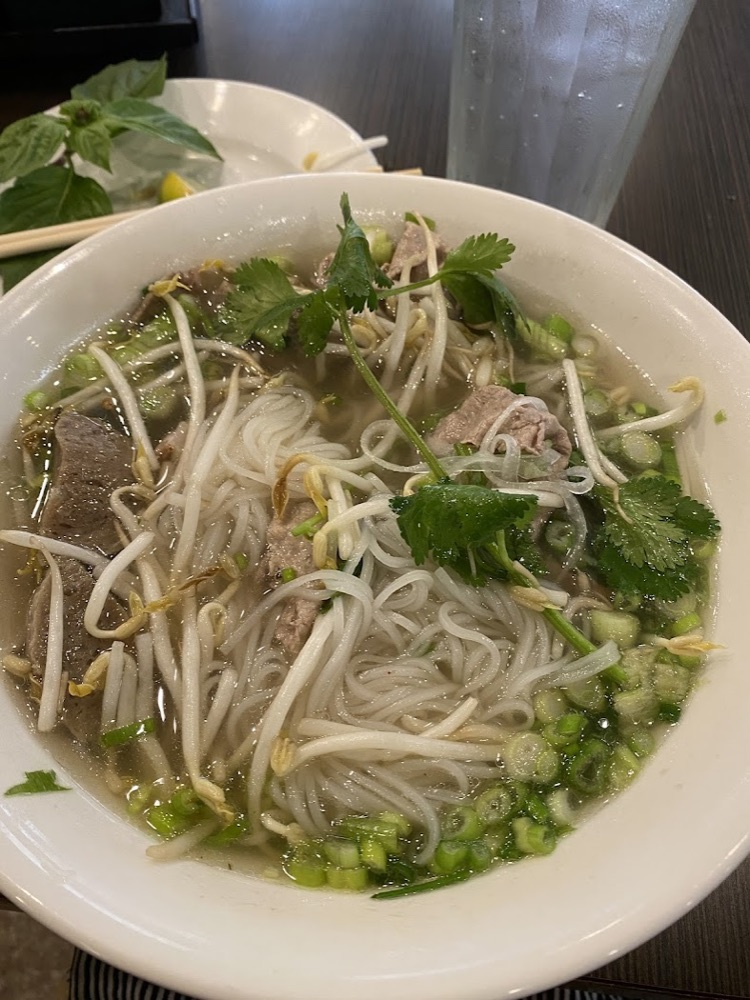
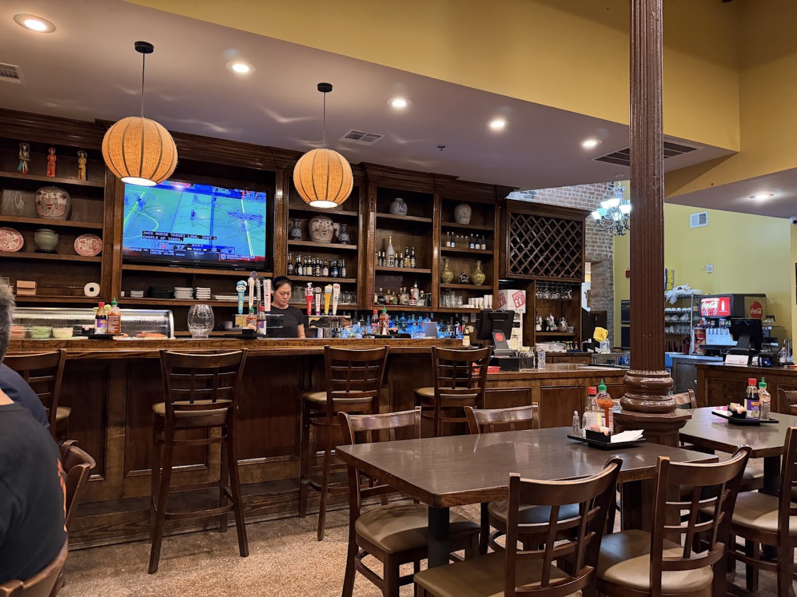
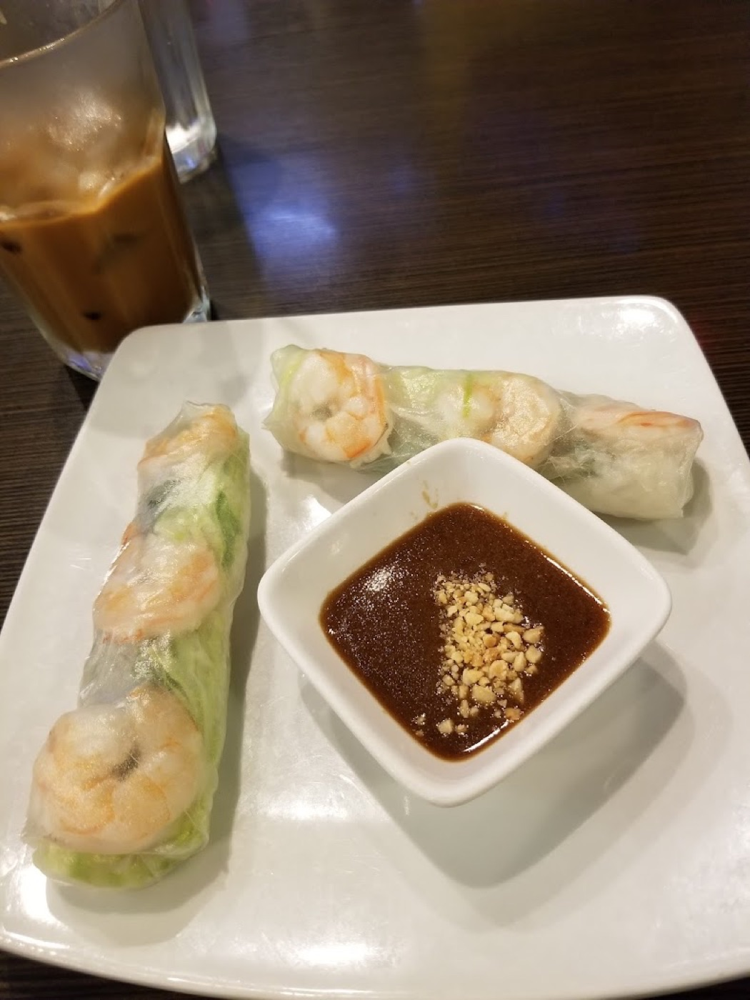
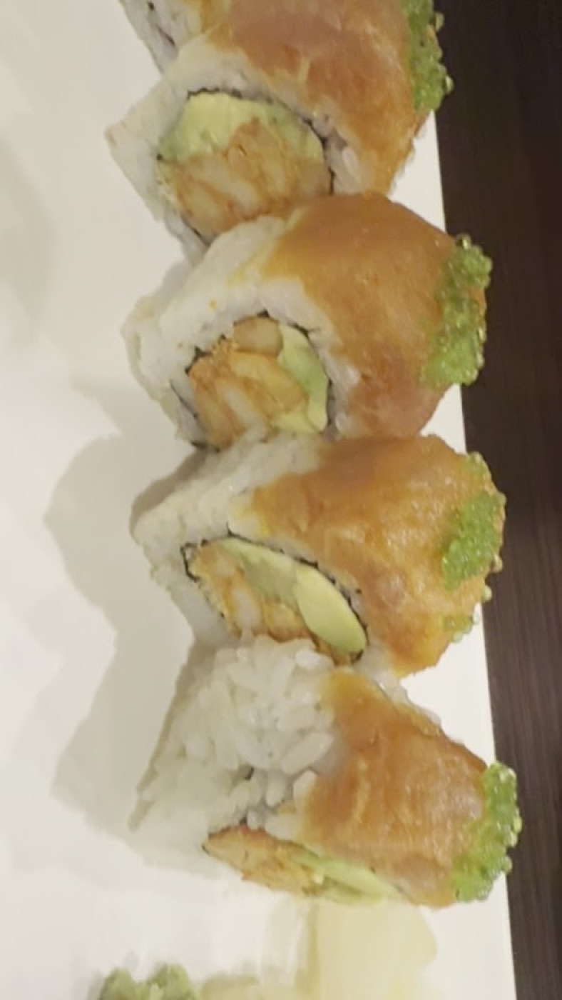
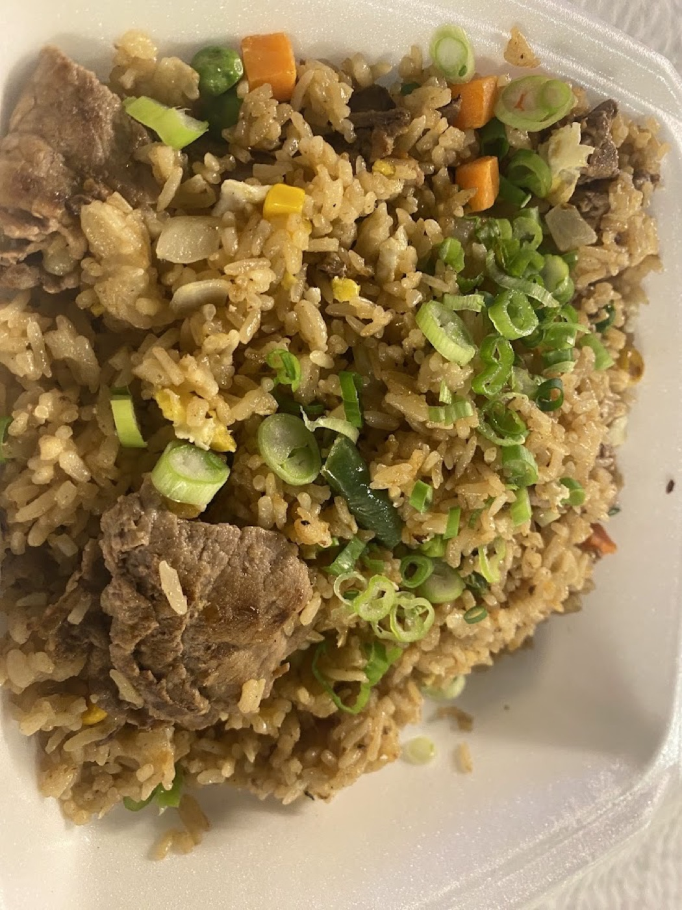
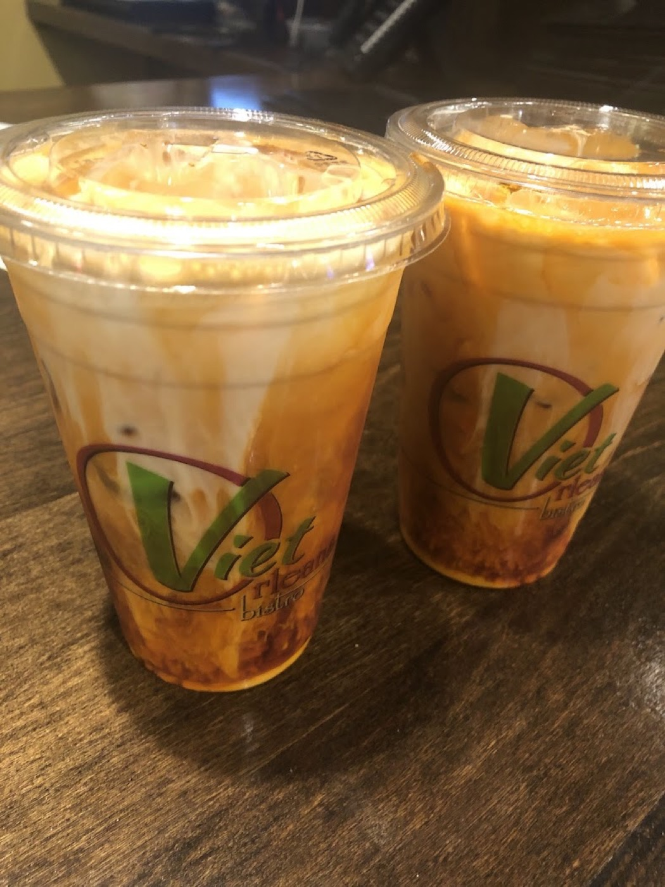
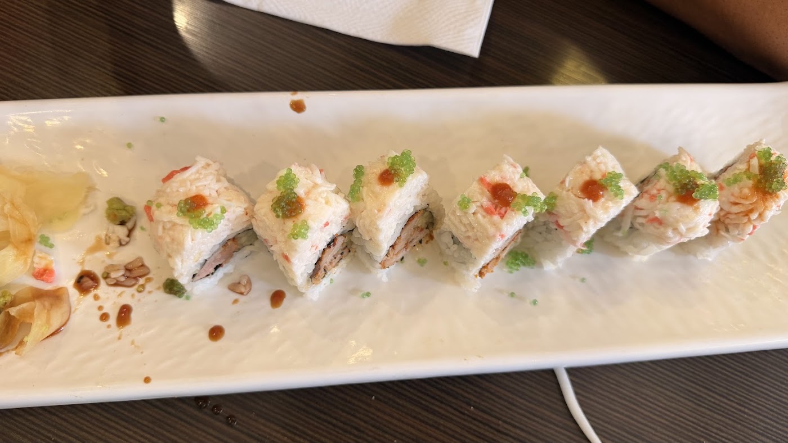
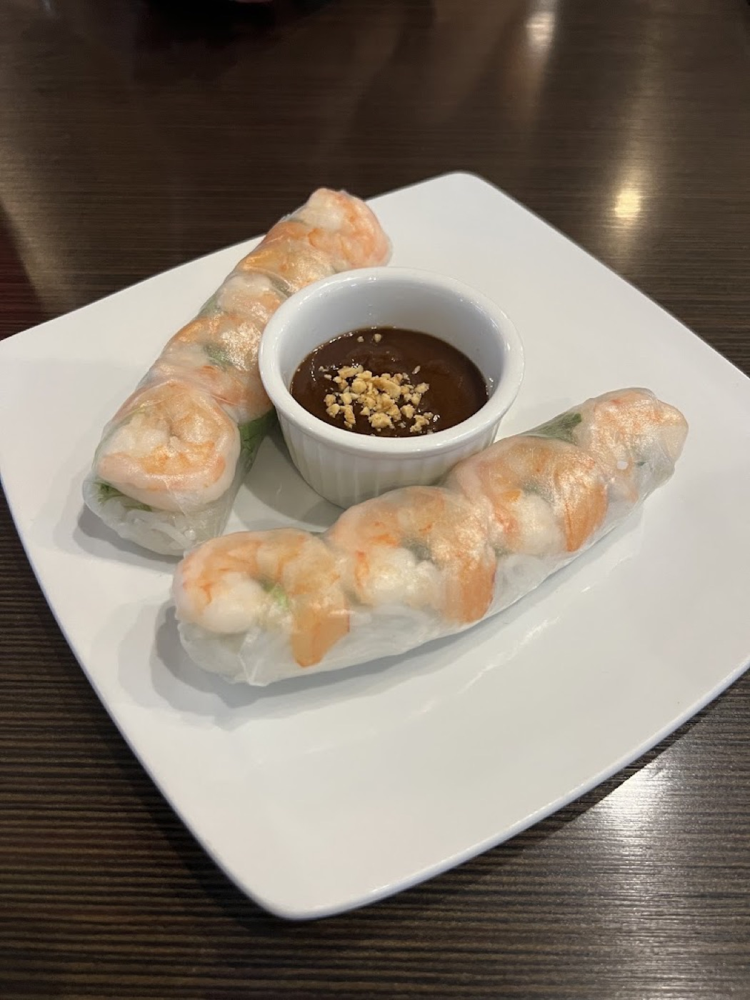
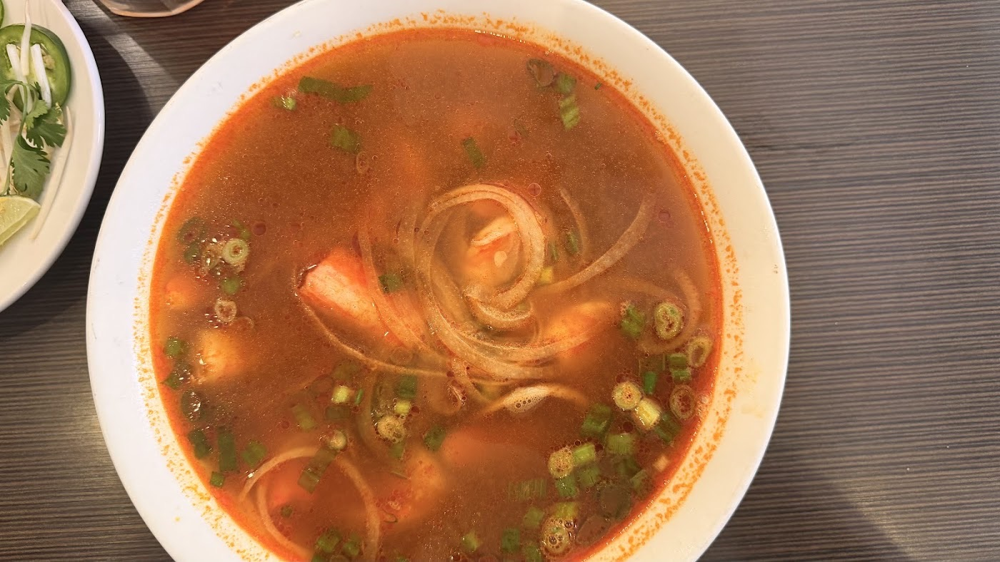

No. 01
Seafood Pho
Shrimp, squid, fish balls, and the house broth. The bowl people photograph.

Lunch counter fast, dinner-date calm. The CBD's go-to when you want something fresh and hot for under twenty dollars.
Viet Orleans opened on the corner of Baronne and Gravier to feed the office towers and hotels around it, and it still does that better than anywhere in the CBD: a bowl of pho lands in about six minutes at the lunch rush. The broth is clear and long-simmered, the herbs come piled high, and the brisket is the cut regulars ask for.
Then the sun goes down, the TVs go on, and it becomes a quiet neighborhood spot with a real sushi bar, sake, happy hour cocktails, and Vietnamese iced coffee strong enough to get you through the second half. Cruise passengers find it before a sailing and come back after.

“Best sushi and staff in town hands down. Visited before our cruise and was so good we visited upon return.”Google review · 4.2 stars from 837 reviews
“I absolutely adore this place. The food is always delicious and fresh, the service is quick and friendly even during the lunch rush, and it's not too expensive considering the location. Absolutely recommend the sushi and rice dishes. The pho is okay.”
Sophia Mc · Google“House fried rice is amazing however pay close attention to your change. It tends to come up short at this location and many other places in New Orleans.”
Trevor Noah · Google“Best sushi and staff in town hands down. Visited before our cruise and was so good visited upon return”
Jim Reaves · Google





| Mon | 11am – 9:30pm |
| Tue | 11am – 9:30pm |
| Wed | 11am – 9:30pm |
| Thu | 11am – 9:30pm |
| Fri | 11am – 9:30pm |
| Sat | 11am – 9:30pm |
| Sun | 11am – 9:30pm |
300 Baronne St, New Orleans, LA 70112
(504) 333-6917